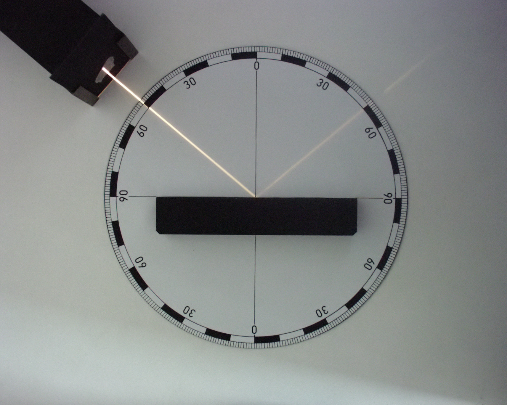
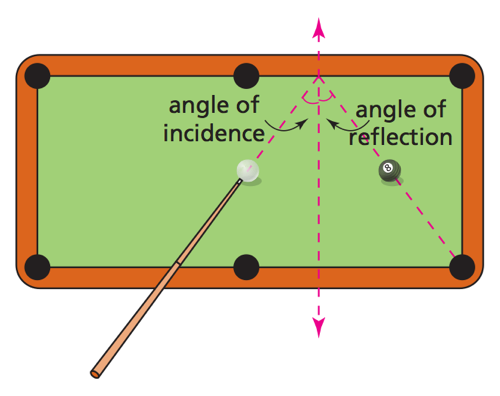

Reflection
We have all witnessed the reflection of light in nature. On a bright summer's day the calm and smooth surface of a pure mountain lake may reflect light like a perfect mirror. But why do we see an images in a lake, where there is no object?
The angle of incidence of light is equal to the angle of reflection.. The reflected light reaches the observer at the angle of reflection. The source of light apppears as virtual object the observer.
Notice that a pool ball is reflected from the boundary of the table in just the same manner as light is reflected from a mirror. Therefore, scientists like Newton believed that light is essentially a stream of tiny balls called particles.
However, light is not merely reflected from surfaces like billiard balls. Light appears to bend into a different direction, when it passes from air into a different medium like glass or water. The relationship between the angle of incidence and the angle of refraction is known as Snell's law.

In his 1678 Traité de la Lumière, Christiaan Huygens showed how Snell's law could be explained by the wave nature of light, using what we have come to call the Huygens principle. This was the first strong evidence that light is not a particle but a wave.